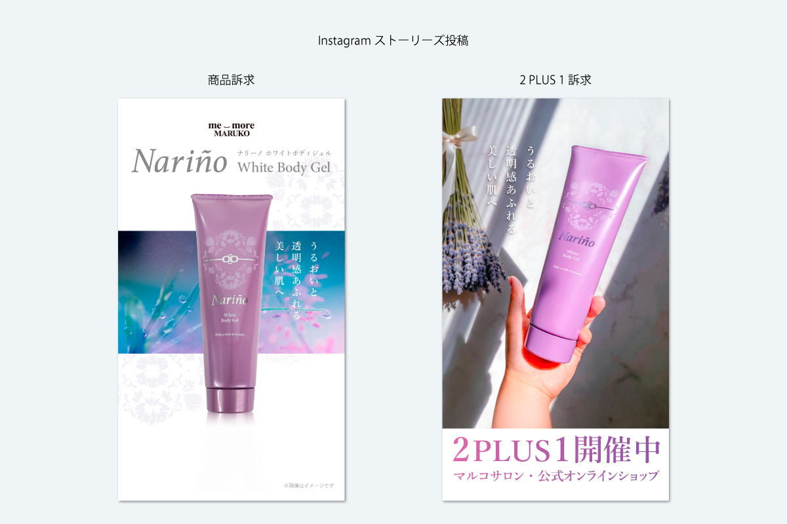
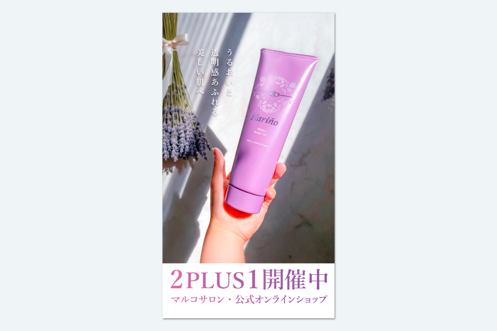
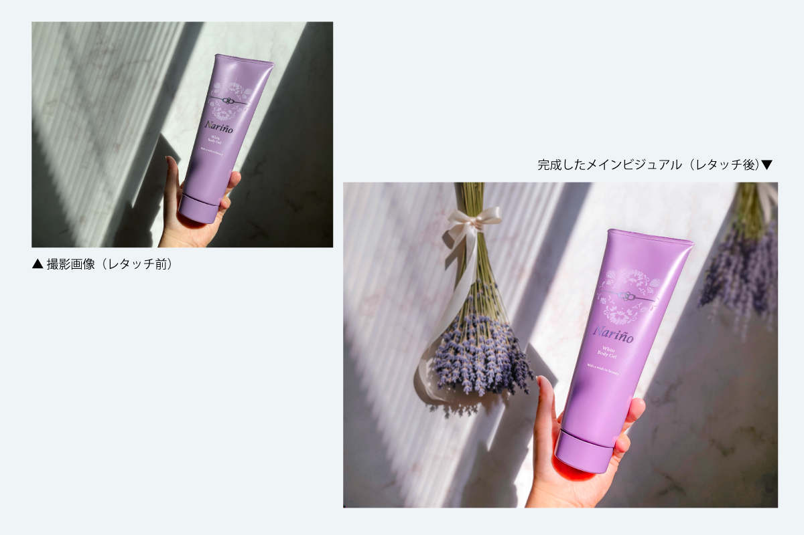

ナリーノ ホワイトボディジェル紹介



Instagram投稿
| 制作期間 | 2025年12月 |
| 制作時間 | 約12時間 |
| 依頼元 | B&W |
| 媒体 | Instagram（フィード、ストーリーズ）、WEBページ |
| 使用アプリ | Illustrator、Photoshop、Adobe Firefly、Adobe Express |
制作背景・意図
定番商品「ナリーノ ホワイトボディジェル」紹介用のSNS媒体画像を制作しました。従来紹介投稿がなかったため、フライヤーをリニューアルした内容をもとに新規制作。商品の切り抜き素材の他、社内で新たに商品イメージの撮影を実施し、ラベンダーなど香りのイメージをAdobe Fireflyを活用して合成。落ち着きと優雅さを感じるビジュアルに仕上げました。
ボディケア商品として、モデルが体にジェルを塗布するカットを採用し、潤い表現のバブルや水面をデザインにプラス。ナイトシーンやリラックスタイムに合う幻想的な紫トーンで世界観を表現しています。
フィード投稿では最後に定期購入価格を明示し“お得感”をしっかり訴求。商品ページ用カルーセル画像も制作し、ネット販売部に設定依頼。さらに2PLUS1プロモーション用に、Adobe Expressで動きのあるストーリーズ動画を作成し、目を引く素材として頻度高く活用できるよう工夫しました。